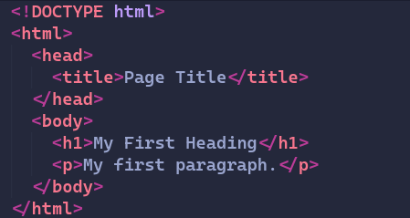
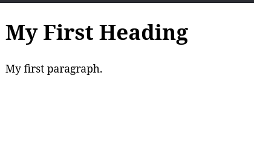
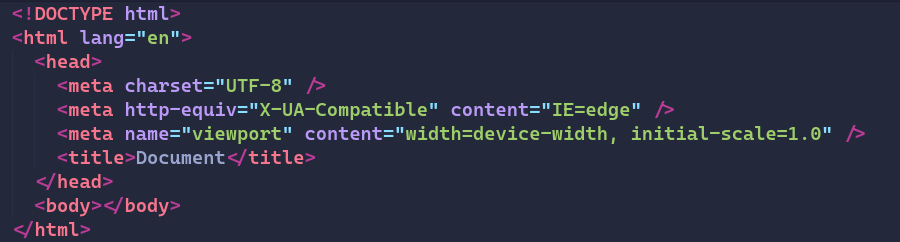
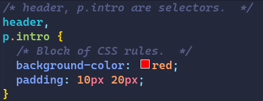
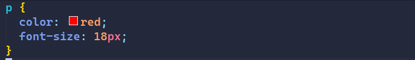
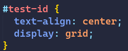
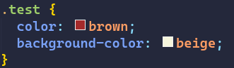
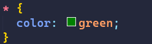
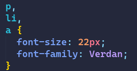

This technical guide is intended to help people learn the basics of Web Development.
To be able to understand the content of this guide, one must be well versed with the following:
- How the web works? That is being well aware of the different kinds of requests, models of the web.
- The internet. Being aware of the different ways communication over the web is happening.
HyperText Markup Language or HTML is the standard language for Web pages. Using HTML, we can provide the basic stucture of the website. It consists of a series of elements. HTML elements tell the browser how to display the content.
This is how to create a simple website in HsTML:
This simple code snippet results in a webpage like this:
HTML has many commonly used tags, which are used by almost all the web developers around the world:
-
head: This tag is used to provide the metadata and all other information which is not visible to the end-user but is accesible by the browser. -
body: The body tag contains all the visible information which the end-user interacts with. It can contain images, audio, video, forms, etc. -
div: One of the most commonly used tags, the div tag is used to divide a page into smaller divisions which can be further divided into much smaller sub divisions.
If you wish to work with HTML, you should always remember to use the following boilerplate code:
CSS or Cascading Style Sheets is the primary language used to style HTML documents. CSS describes how HTML elements should be displayed. CSS can also control the layout of multiple webpages all at once. Styling is done via the use of Selectors. Some common selectors are:
- Simple selectors: Select the elements based on the tag name.
- Combinator Selectors: Combining two or more elements together based on a specific relationship between them.
- Pseudo Class Selectors: Select elements based on a certain state.
- Pseudo Element Selector: Select and style the parts of an element.
- Attribute Selector: Select element based on an attribute or attribute value.
A rule in CSS consists of a selector and a block:
CSS has many different ways of selecting elements:
-
The element Selector:
This will give all the paragraph elements a red color and make the font to be 18 pixels.
-
The id Selector:
This gives the element with the id "test-id" a display of grid and aligns its contents to center.
-
The class Selector:
This gives the elements with the class "test" a brown color with a beige background.
-
The Universal Selector:
This will give all the content in the webpage a color of green.
-
The Grouping Selector:
This will give all paragraphs, lists and anchor tags a font-size of 22 pixels and a font-family of Veradna.
Visual Studio Code is a code editor made by Windows for Windows, Linux and macOS. It is one of the most popular code editors. It also includes features such as debugging, syntax highlighting, code refractoring and embedded Git and has a rich collection of extensions which can make it even more usable for productive tasks.